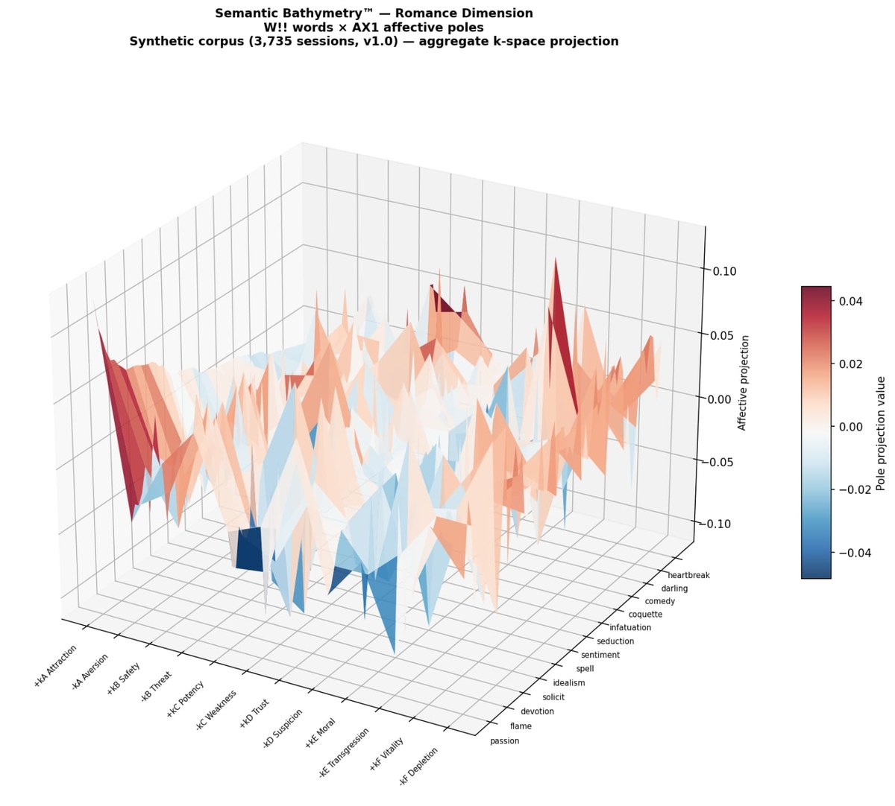

The analysis layer
Insightvault
AI-driven analysis and optimisation.
AI-driven analysis and optimisation.

Results are rendered as a Boltzmann-style energy surface: stable, frequently co-activated regions of meaning appear as low-energy attractor peaks, and systematically avoided regions appear as high-energy repulsive basins, giving equal visual weight to what a population approaches and what it avoids. Each of the six affective axes adopts 10 pole-aligned anchors calibrated against the specific semantic vocabulary of the Dimension under consideration, projecting the anonymised Semba data onto a 10 x 50 dimensional reticular topography. In this way a single word such as e.g. "Heart" can be seen to have varying affective weight when viewed in different semantic contexts e.g. Romance, Health and Poker.
The Peduncular Quotient (PQ) identifies which words in a Dimension's vocabulary act as structural connectors across otherwise distinct regions of meaning, rather than simply which words are chosen most often. It works alongside TILT normalisation, which removes each Dimension's own inherent semantic bias, so that a population's genuine associations — including the words it systematically avoids — can be measured and compared across different Dimensions and over time, rather than being read off raw selection frequency alone.
Canonical examples are words like "Bank" and "Kiss": each sits at the junction of otherwise unrelated domains — finance and geography for "Bank", romance and betrayal for "Kiss" — and PQ is what identifies that structural, load-bearing role, rather than treating either word as belonging to a single semantic neighbourhood.
Periscope is the platform's recursive AI calibration layer. Rather than treating demographic and circadian correction factors as fixed assumptions, it treats them as parameters to be learned from evidence, updating them from the accumulated dataset on a regular batch cadence. The used of Bayesian and Monte Carlo techniques allows calibration to be continuously optimised, ensuring that noise filters, semantic parameters and input vocabulary are fine-tuned to reflect poly-dimensional real-world empirical relationships. Together, these are what make the platform adaptive rather than static — quarter-on-quarter change in the corrected signal is the genuine finding, not noise to be filtered out.
e.g. If you wish to resonate "Trust" with a Young Woman at Night, the most effective prompt might be "Loyalty"; however, for a Middle-Aged Man during the Day, to evoke the concept of "Trust" it might be preferable to refer to "Integrity". This is generally a stable pattern, but over the last 3 quarters Old Women appear to have been migrating their opinion in favour of "Integrity" and away from "Romance"....